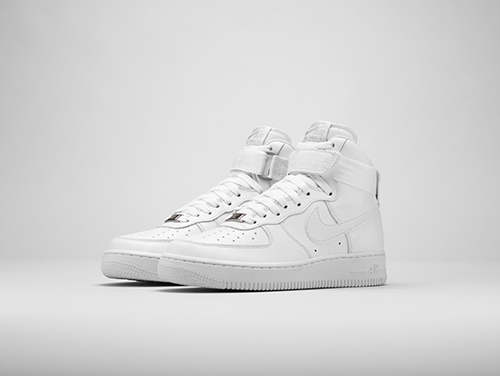

홈 > 브랜드 매거진 > 나이키
나이키
나이키는 스포츠용품보다 자기극복의 서사를 더 강하게 판매하는 브랜드다. 신발과 의류는 제품이지만, 소비자가 실제로 구매하는 것은 기록을 갱신하고 자신을 증명하고 싶은 감정이다. 나이키의 커뮤니티와 디지털 서비스는 이 감정을 지속시키는 장치로 작동한다.
산업 분야 스포츠·아웃도어 · 공개 등급 매거진 완성 · 브랜드 평가 5 ★


한눈에 보는 브랜드
나이키는 스포츠용품보다 자기극복의 서사를 더 강하게 판매하는 브랜드다. 신발과 의류는 제품이지만, 소비자가 실제로 구매하는 것은 기록을 갱신하고 자신을 증명하고 싶은 감정이다.
나이키의 커뮤니티와 디지털 서비스는 이 감정을 지속시키는 장치로 작동한다.
브랜드 관점
나이키는 스포츠용품보다 자기극복의 서사를 더 강하게 판매하는 브랜드다. 신발과 의류는 제품이지만, 소비자가 실제로 구매하는 것은 기록을 갱신하고 자신을 증명하고 싶은 감정이다.
나이키의 커뮤니티와 디지털 서비스는 이 감정을 지속시키는 장치로 작동한다. 나이키의 헤리티지는 승리의 이미지를 현대적 소비문화로 번역하는 데 있다.
브랜드명과 상징은 고대적 승리의 감각을 빌려오지만, 그것을 운동장 밖의 일상과 팬덤, 자기관리 문화로 확장한다.
시작과 성장
스포츠의류 브랜드인 나이키는 1962년 필 나이트와 빌 바우어만에 의해 시작되었다. 나이키는 혁신적 제품개발과 선수들과의 강력한 관계 구축을 통해 현재 스포츠 브랜드내 가장 높은 브랜드 가치(26조 달러)를 기록하며 정상의 자리에 있다.
브랜드 아이덴티티
나이키는 제품에 혁신을 더한다. 그리고 사용자는 제품을 통해 용감하고 거침없이 도전한다.
열정을 바탕으로 도전하는 나이키의 모습은 브랜딩의 전 영역에서 나타나고 있다.
제품과 서비스
디지털 기술과 러닝(Running) 문화를 통해 나이키는 거대한 커뮤니티를 만들 수 있었다. 나이키는 기술과 문화로 사람들을 연결하고, 그들이 경쟁하고 즐길 수 있는 환경을 디자인하고 있다.
나이키의 상품들은 크게 성별, 연령, 그리고 운동종목에 따라 카테고리가 구분된다. 지속적인 제품 개발을 통해 기능적 가치는 물론, 선수들의 활약을 통해 승리의 가치도 함께 전달하고 있다.
풋웨어, 스포츠 장비, 옷
현재 상태
타임라인
BI/CI 변천사
함께 읽을 브랜드
 스포츠·아웃도어 · 편집 검수파타고니아
스포츠·아웃도어 · 편집 검수파타고니아파타고니아는 아웃도어 브랜드이면서 동시에 소비를 줄이라는 역설적 메시지로 신뢰를 쌓은 브랜드다. 제품을 파는 기업이지만 브랜드의 설득력은 자연, 책임, 오래 쓰는 태...
Ni
Nike Run
스포츠·아웃도어 · 편집 검수Nike Run나이키 러닝 라인 전용 시각 시스템은 나이키의 전 세계 러닝 활동을 하나의 정체성으로 묶는다. 핵심은 1980년대 나이키 락업에서 출발해 브랜드 이름 자리에 선언적인...
 스포츠·아웃도어 · 자료 기반챔스스포츠
스포츠·아웃도어 · 자료 기반챔스스포츠챔스 스포츠(Champs Sports)는 운동화·스포츠 의류·용품을 판매하는 미국의 스포츠 소매 체인이다.
EI
아이더
스포츠·아웃도어 · 자료 기반아이더아이더(EIDER)는 1962년 프랑스에서 설립돼 현재 한국 K2코리아가 전개·보유한 아웃도어 브랜드다.
 스포츠·아웃도어 · 자료 기반코오롱스포츠
스포츠·아웃도어 · 자료 기반코오롱스포츠코오롱스포츠(KOLON SPORT)는 코오롱인더스트리 FnC부문이 운영하는 대한민국의 아웃도어 브랜드다. 1973년 창립한 국내 1세대 아웃도어로, 고기능성 등산·아...
 스포츠·아웃도어 · 자료 기반Marathon Sports
스포츠·아웃도어 · 자료 기반Marathon Sports마라톤 스포츠(Marathon Sports)는 1980년 에콰도르에서 시작한 스포츠용품 소매 체인이다. 에콰도르를 대표하는 멀티브랜드 스포츠용품 소매업체다.
 스포츠·아웃도어 · 자료 기반네파
스포츠·아웃도어 · 자료 기반네파네파(NEPA)는 1996년 이탈리아에서 시작해 2005년부터 한국에서 본격 전개된 아웃도어 브랜드다.
 스포츠·아웃도어 · 디렉토리젝시믹스
스포츠·아웃도어 · 디렉토리젝시믹스젝시믹스는 스포츠·아웃도어 브랜드로, 기능성, 경기 문화, 커뮤니티, 착용 이미지가 브랜드 가치를 만드는 영역입니다.